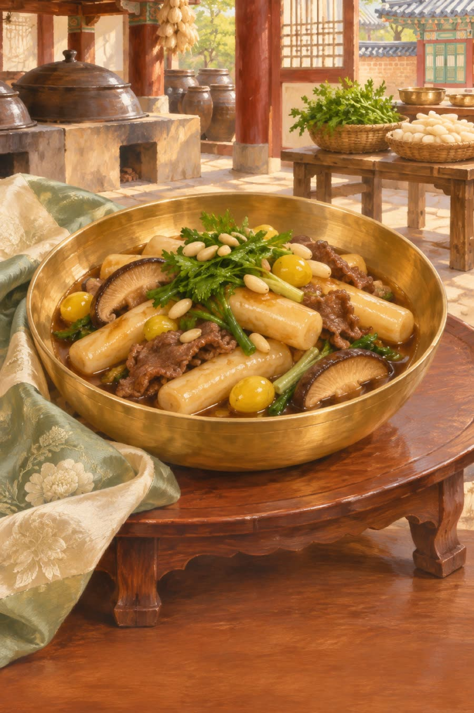
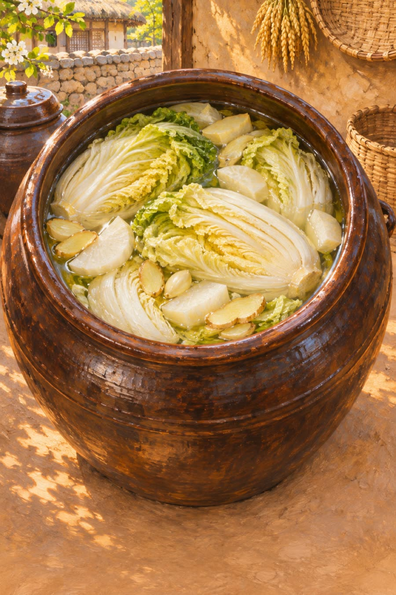
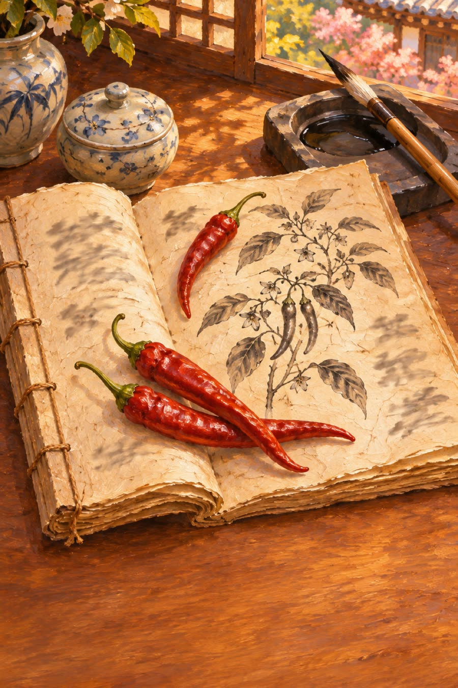
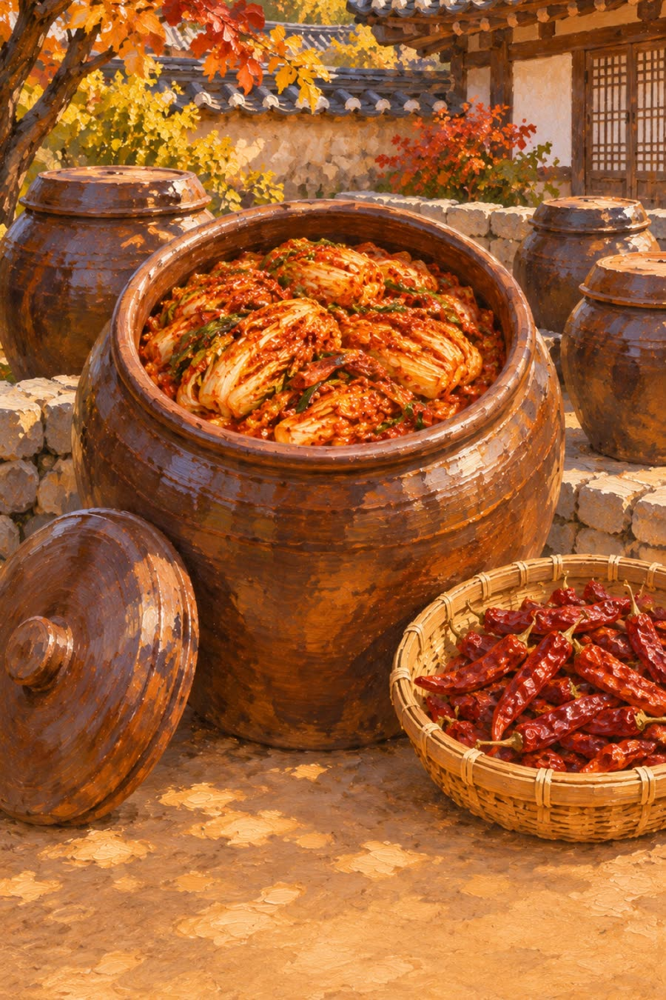
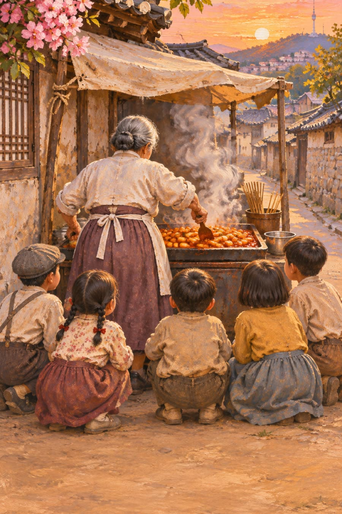

순례자의 한끼한밤
순례자의 한끼한밤
떡볶이는 원래,
빨간 음식이 아니었어요.
떡볶이 하면 빨간 국물부터 떠오르죠. 그런데 조선 궁중에서 먹던 떡볶이는 색이 전혀 달랐어요. 고기와 채소를 넣고 간장으로 볶은, 갈색 떡볶이였거든요. 지금 우리가 '궁중 떡볶이'라고 부르는 바로 그 맛이에요.

오백 년 전, 하얀 김치
오백 년 전엔 이 땅에 고추가 없었어요. 김치에도 고추가 없었죠. 소금에 절인 배추에 마늘, 생강 같은 향신료로 맛을 냈어요. 지금의 백김치에 가까운 모습이에요.

아메리카에서 온 고추
고추는 원래 아메리카에서 온 작물이에요. 대항해시대에 바닷길을 쥐고 있던 포르투갈 배들이 고추를 아시아 곳곳으로 퍼뜨렸죠. 조선에는 일본을 거쳐 들어왔다는 설이 널리 알려져 있어요.
고추가 건너온 바닷길 (널리 알려진 설)
정확히 어느 항구를 거쳐 왔는지까지 기록으로 확인된 건 아니에요. 그래도 지구 반 바퀴를 돌아 이 땅에 닿은 건 분명하죠.
1614년, '왜겨자'
고추가 조선의 책에 처음 나오는 건 1614년, 이수광이 쓴 『지봉유설』이에요. 이름은 남만초, 일명 왜겨자. 남쪽 바다 건너온 매운 풀이라는 뜻이었어요.

그 뒤 고추는 조금씩 김치에도 들어갔어요. 1766년 『증보산림경제』에는 고추를 넣은 김치가 여러 가지 방법으로 자세히 적혀 있어요.

1953년, 서울 신당동
그리고 1953년, 서울 신당동. 마복림 씨가 떡을 고추장에 볶아 팔기 시작한 것으로 알려져 있어요. 그게 우리가 아는 빨간 떡볶이의 시작이에요.
서울 신당동에서 고추장 떡볶이가 팔리기 시작한 해.
빨간 떡볶이는 아직 일흔 살 남짓이에요.

한눈에 보는 떡볶이의 길
- 조선 궁중
떡볶이는 간장으로 볶은 갈색
- ~1500
이 땅엔 고추가 없음. 김치는 하얀색
- 16세기
포르투갈 배들이 아메리카 고추를 아시아로
- 16세기 말
일본을 거쳐 조선에 들어왔다는 설
- 1614
『지봉유설』에 남만초, 일명 왜겨자로 기록
- 1766
『증보산림경제』에 고추 넣은 김치가 자세히 기록
- 1953
서울 신당동, 고추장 떡볶이의 시작
간장 떡볶이도 먹어 봤다면, 어떤 쪽이 더 입에 맞았는지 궁금해요.
우리가 아는 그 빨간색,
처음부터 있었던 건 아니죠.
For pilgrims passing by
Tteokbokki wasn't always red. The royal version of Joseon was stir-fried with soy sauce and was brown. Chili peppers came from the Americas, spread across Asia on Portuguese ships, and are said to have reached Korea by way of Japan. The first Korean record, in 1614, called them "Japanese mustard." The red, gochujang tteokbokki we know is said to have started in 1953 in Sindang-dong, Seoul.
참고한 기록
- 이수광, 『지봉유설』(1614) — 고추(남만초·왜겨자)에 대한 첫 기록
- 유중림, 『증보산림경제』(1766) — 고추를 넣은 김치가 자세히 기록된 책
- 고추 전래 경로는 일본 경유설이 통설이며, 다른 견해도 있습니다
- 1953년 신당동 떡볶이는 널리 전해지는 이야기를 바탕으로 했습니다
🕯️ 오늘 밤 이야기는 여기까지.
여러분은 간장 떡볶이파인가요, 빨간 떡볶이파인가요?